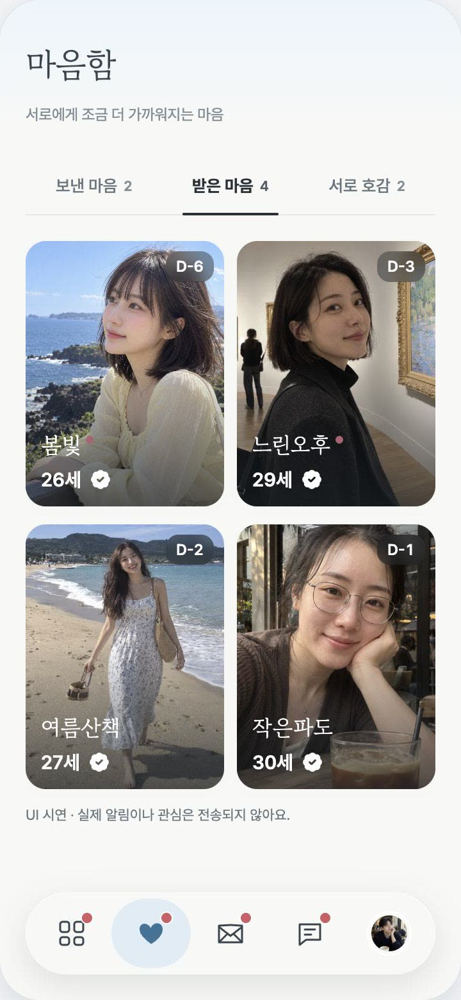

마음함 · 분홍 하트 표시 줄이기
F14. 사진 카드 모양은 그대로 두고, 분홍 칩과 분홍 탭만 뉴트럴로 바꿨어요.
탭
지금

시안

바뀌는 것
- 분홍 칩("관심이 도착했어요" · "관심 보냄" · "서로 호감")을 뺐어요.
- 그 자리(오른쪽 위)에 남은 기간 D-n을 어두운 반투명 칩으로. 인연 홈 넘김 숫자 칩과 같은 모양이에요. 서로 호감은 기한이 없어서 칩도 없어요.
- 새로 온 마음만 이름 옆에 장미색 점 하나.
- 탭: 고른 탭은 검정 글자 + 검정 밑줄, 숫자는 회색 글자만(바탕 없음).
- 아래 메뉴 하트는 그대로예요.